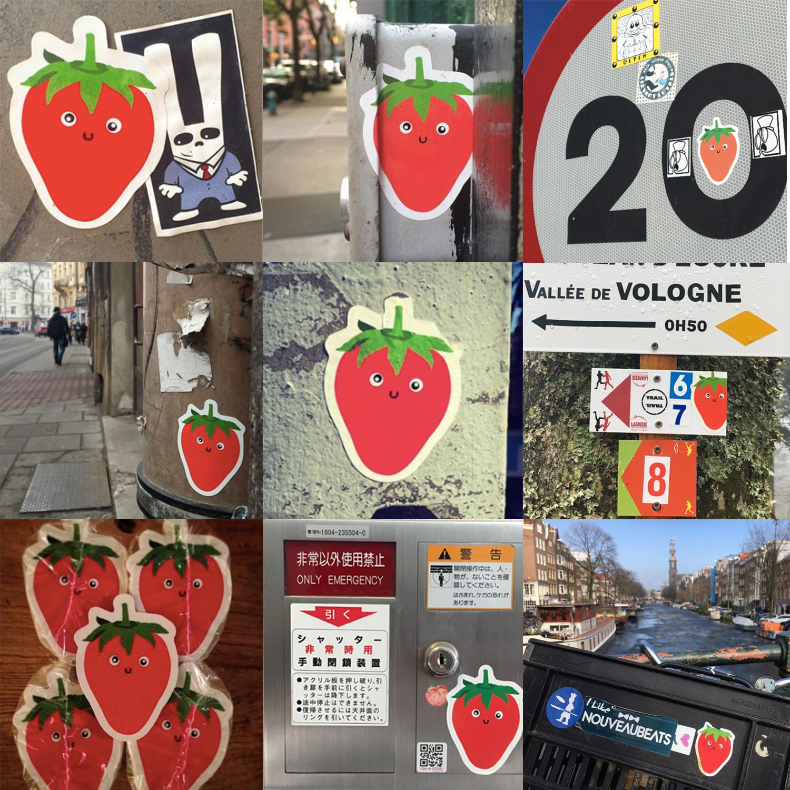

Leading up to the spring of 2015, I had become obsessed with graffiti and street art. Discovering Shepherd Faiery’s iconic original OBEY campaign ignited something in teenage me. I couldn’t stop thinking about how beautifully his posters popped in the urban landscapes he pasted them on. I was in awe of the scale of the work, the relentless repetition of it, and the simplicity of the design.
So, naturally, I decided that I would take after my idol, and become Amsterdam’s most prolific street artist with my very own campaign.
Sam The Strawberry Man was born soon after, and was destined to become an iconic street art character from the moment that first A3 poster shot out of my high school's Xerox machine…


With a rich history of graffiti and a vibrant existing scene, Amsterdam was an ideal place to launch a guerrilla street art campaign. Wooden scaffolding, electricity boxes, and alleyways served as great canvases for Sam to reside. I would get up early, well before school, and set out on my rusty bike while the city slept to plaster Sam around with my homemade wheat paste concoction and a painter's brush.
Soon, Amsterdammers, old and young, began noticing the bright red character appearing everywhere around their city. Unlike OBEY, the Sam Strawberry Man design contained no text. So every now and then, I’d tag the name beside a poster and created an Instagram account, @samstrawberryman, to see if anyone would actually look it up. Before long my feed was flooded with photos of Sam with his many new friends.


Stickers were next. I found a local printer in my neighborhood who was a fan of Sam and gave me a discount on an initial run of 1000. After that, I never left the house without a stack in my pocket and made it a rule never to come home with any left. Stickers basically tripled Sam’s footprint in Amsterdam. My new goal was to have one on every bike basket (but this was nearly impossible).
